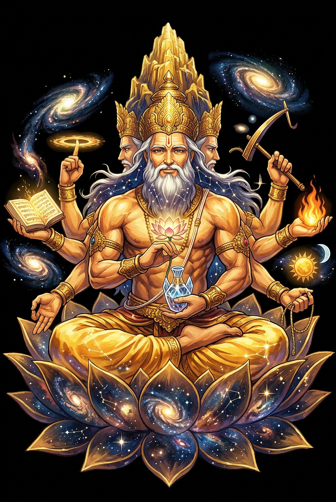

The Authentic Orthography
Lord of Creatures · lord of creatures, creator, RV. &c. &c. (N. of a supreme god above or among the Vedic deities [RV. (only x, 21, 10); AV.; VS.; Br.] but in later times also applied to Viṣṇu, Śiva

Why Prajāpati.com is the correct form
प्रजापति
The name in its original Sanskrit form. Prajāpati (प्रजापति) is attested as lord of creatures — “lord of creatures, creator, RV. &c. &c. (N. of a supreme god above or among the Vedic deities [RV. (only x, 21, 10); AV.; VS.; Br.] but in later times also applied to Viṣṇu, Śiva”. Its macron-length vowels carry the full phonetic and orthographic weight of the source tradition.
prajapati
Reduced to plain prajapati, the name loses everything that made it specific: macron-length vowels. What remains is an ASCII string that machines can parse but that no longer speaks with its original voice.
Prajāpati
The Unicode restoration recovers what ASCII flattened. Prajāpati restores macron-length vowels, returning the name to its original written dignity. The domain encodes to Punycode, but the browser displays the truth.
Prajāpati.com → xn--prajpati-k7a.com
The non-ASCII characters in Prajāpati are encoded while the ASCII remains visible. To the DNS, it is Punycode. To humanity, it is Prajāpati.
How Prajāpati travels from ancient script to the modern URL
How Prajāpati was spoken
Lord of Creatures
Prajāpati is not a god of thunder or war. He is the slow, patient power of generation itself — the one who broods over the waters, performs tapas (ascetic heat), and brings forth creatures by sacrifice. In the Brāhmaṇas he becomes the supreme creator; in the Purāṇas, he passes his crown to Brahmā.
He heats himself by ascetic ardor until the cosmos condenses from his sweat and seminal emission.
The ritual fire altar is his body; every sacrifice reconstructs the world from his dismembered form.
He produces the triple Veda from himself so that gods and humans may speak the language of order.
From the waters an egg develops; its shell becomes earth, its inner fire becomes sun and life.
Stories of Prajāpati
Prajāpati's mythology is cosmogonic speculation cast as narrative. He is the One who becomes many, the undifferentiated whole who divides himself so that time, space, and species can exist.
In the Śatapatha Brāhmaṇa, Prajāpati exists first as the nonmanifest unity-totality. Desire (kāma) moves him to reproduce, so he heats himself by ascetic ardor (tapas) until he creates the triple Veda, then the Waters, and finally enters them. An egg develops; from it he is born as the year, the sacrifice, and the ordered cosmos. Exhausted by creation, he must be restored through ritual — which is why every sacrifice is said to be Prajāpati.
Ṛgveda 10.90 hymns the Puruṣa, the Cosmic Man whose body is the whole universe. The gods sacrifice him, and from his parts arise the four varṇas, the sun, moon, and earth, and all creatures. In the Brāhmaṇas this Puruṣa is identified with Prajāpati: 'Puruṣa is Prajāpati; Puruṣa is the Year.' Creation is therefore not manufacture but self-sacrifice — the deity giving himself to become the world.
As Vedic speculation gives way to theistic Purāṇic narrative, the abstract creator becomes the four-faced god Brahmā. Prajāpati's functions — creation, Vedic knowledge, and sovereignty over creatures — are inherited by Brahmā, who is often called Prajāpati Brahmā. The older name survives as a title rather than a separate deity, though it is still used in mantras and rituals of conception, pregnancy, and childbirth.
Before there was a world, there was only the will to become. That is Prajāpati. Not a craftsman standing outside his work, but the work itself in the moment before it knows it is a work. His tapas is the concentrated energy that precedes all making — the silence so full that it must become sound, the darkness so dense that it must become light. Every creative act repeats his gesture: the painter before the canvas, the writer before the blank page, the parent before the child. To create is to risk dismemberment, to give pieces of oneself so that something else can live.
Enter Extended Lore